Chapter 5: Numerics & Ranges¶
In this chapter, you’ll complete two iPad apps to investigate the properties of integers and floating-point numbers. The first of these apps is BitViewer, which lets you look at bit-level representations and operations. The second app is Mandelbrot, which allows you to test Apple’s new Swift numerics package. The app lets you visualize the precision of different floating-point types. Finally, you’ll use a playground to explore how Swift implements ranges and strides. Throughout the chapter, you’ll flex your generic programming muscles and write code that works with a family of types.
This chapter might feel a little academic because it deals with the low-level machine representation of numbers. A little knowledge in this area will give you extra confidence and the ability to deal with low-level issues if they ever come up. For example, if you deal with file formats directly, or find yourself worrying about numerical range and accuracy, these topics will come in useful. Swift numerics is also an excellent case study for using protocols and generics that you looked at in previous chapters.
Representing numbers¶
Computers are number-crunching machines made of switching transistors. Consider the base-10 number 123.75. You can represent it as 1, 2, 3, 7 and 5 if you multiply each digit by an appropriate weight:
The diagram shows how the number is composed. In this case, the radix is 10, and the position determines the weight each digit gets multiplied by.
Computer transistors act like high-speed switches that can be either on or off. What would it look like if you had only two states (0 and 1) to represent a number instead of 10? 123.75 would look like this:
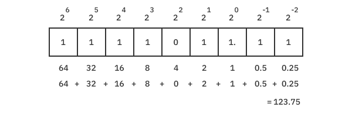
The radix here is two. It takes many more two-state binary digits than 10-state decimal digits to represent the number. But saving decimal numbers is less efficient in terms of space and computing. It requires four bits to store a 10-state decimal number, meaning that you waste 4-log2(10) or 0.678 bits for each digit you store.
The first bit (in the 64 position) has a special name. It’s called the most significant bit or MSB. That’s because it has the most significant effect on the overall value. The last bit (in the 0.25 position) is called the least significant bit or LSB. It has the smallest effect on the overall value.
You can see that number systems rely on exponents. If you need a refresher on those, you might get a quick review over at the Khan Academy. https://bit.ly/3k0Tsin.
Integers¶
The first personal computers could deal with only 1 byte — 8 bits — at a time (numbers from 0 to 255). You needed to juggle these small values around to produce anything larger. Over the years, the size of the information computers could handle repeatedly doubled — to 16 bits, 32 bits and now 64 bits on the latest Intel and Apple processors.
Swift supports all the standard integer sizes, including Int8, UInt8, Int16, UInt16, Int32, UInt32, Int64 and UInt64. These bit widths are necessary for systems-level programming and often have native, specialized hardware support as well.
Here’s a table showing each type and the range of values it supports:
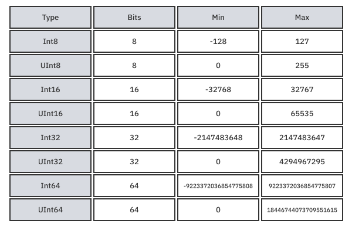
In your day-to-day programming, you’ll want to use Int, which is 32 bits on older 32-bit hardware and 64 bits on 64-bit hardware. Because the limits are so large, you rarely need to worry about overflow. It’s treated as so unlikely that Swift will halt your program if you happen to exceed the limit. This safety feature makes a large class of bugs obvious. But if you’re using an unsafe language, such as C, your program will continue to run, producing unexpected results that can be ruthlessly hard to debug.
Protocol oriented integers¶
Swift’s integer types are struct-based values that wrap an LLVM numeric built-in type. Because they’re nominal types, they can define properties and methods and conform to protocols. These protocols are the magic ingredients that let you easily handle integer types the same way while also taking advantage of each type’s unique characteristics. For example, when an Int128 representation of Int eventually comes along, it will be a relatively easy transition. The protocol hierarchy for integers looks like this:
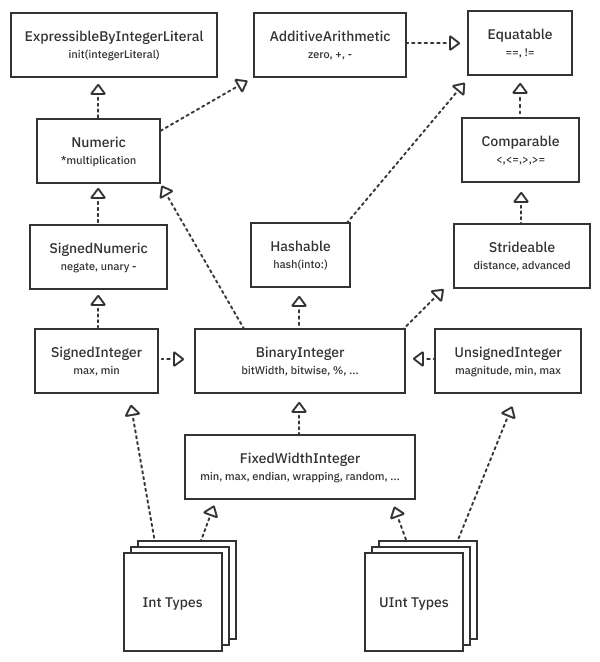
Int and UInt types adopt the FixedWidthInteger protocol and the SignedInteger and UnsignedInteger, respectively. That gives them a ton of shared functionality and codifies their two’s complement representation, which you’ll learn about shortly.
But there’s more. Integers losslessly convert to and from String types thanks to additional protocols and methods.
The protocol relationships look like this:
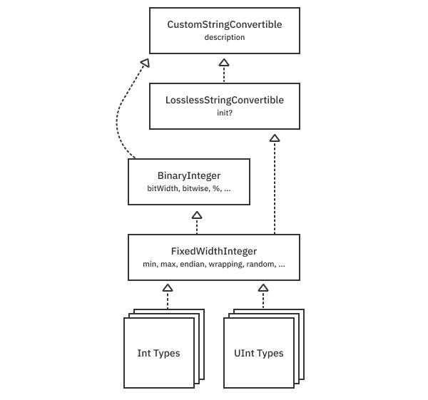
Getting started with BitViewer¶
To get hands-on experience with the integers, open the BitViewer project in the projects/starter folder for this chapter. When you run, using either a device or simulator, rotate into landscape and tap on the show sidebar item in the upper-left, you’ll see a screen like this:
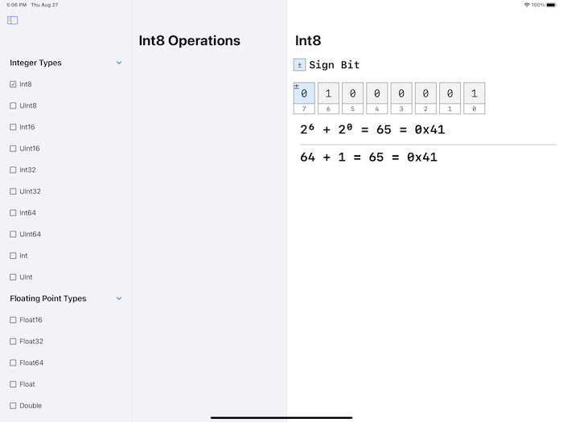
Select a numeric type. For this section, focus on the integer types. You can see a binary representation of a number and tap on the bits to toggle them. Scroll horizontally through all the bits or check the checkbox to stack them vertically into bytes. In a moment, you’ll add code to operate generically on all the integer types.
Understanding two’s complement¶
Using BitViewer, you can poke at the bits to see how the values change. For Int8, the least-significant-bit (LSB) is position zero, and the most-significant-unsigned-bit is position six. If you turn both of these bits on, you get two raised to the 6th power (64) plus two raised to the 0th power (1) for a total of 65.
Position seven is special: It’s the sign bit. You might guess that flipping this bit would make the value -65. These days, all modern hardware uses two’s complement representation, where the sign bit adds in the largest negative value. In this case, negative two raised to the 7th power (-128) added to 65 results in -63. As a diagram, it looks like this:
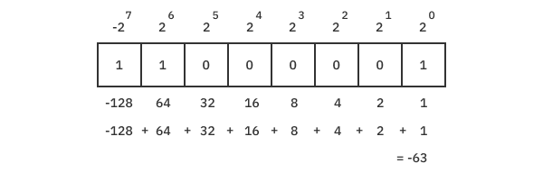
The fantastic thing about two’s complement is that every bit pattern has a unique value (only one 0 and not +0 and -0). Also, addition and subtraction use the same hardware circuit — namely, subtraction is just the addition of a negative number. That silicon space savings cemented two’s complement as the representation of choice in all modern hardware.
Negation in two’s complement¶
The unary - operator and negate method change the sign of an integer, but what happens to the bits? To negate a number using two’s complement, toggle all the bits and add one. For example, 0b00000010 (2) negated would be 0b11111101 + 1 = 0b11111110 (-2). Now try it yourself with a few numbers in BitViewer. Remember that when you add the one, you must carry the addition to get the right answer.
Note: Early computer systems used different strategies to represent negative numbers. The IBM 7090, for example, had a sign bit that just flipped the sign of the number. The PDP-1 used one’s complement, in which negation was achieved by flipping all the bits. The problem with these systems is that they have two representations of zero. Also, addition and subtraction require different hardware circuits. The advent of two’s complement solved these problems.
Exercises¶
- What are the minimum and maximum representable values of a make-believe
Int4andInt10type? - What bit pattern represents -2 using
Int4? (Add it to 2 to see if you get zero.) - List all the protocols shown in this chapter (the above diagrams) that an
Int32supports.
Find the answers to the exercises in the chapter’s download materials.
Adding integer operations to BitViewer¶
Time to add some features to the BitViewer app. Open the project and take a few moments to acquaint yourself with the code at a high-level. Here are some key points to notice:
- Model/ModelStore.swift contains the model — a list of instances of each integer and floating-point type.
- All the numerics get decomposed into bits and displayed by a
BitsViewcontained inIntegerVieworFloatingPointView. - Each bit has a “semantic” type, such as sign, exponent or significand, displayed differently and defined in Model/BitSemantic.swift.
- Many of the abstractions are generic so they work with any integer or floating-point type.
Now, open Model/NumericOperation.swift and add this to the file:
enum IntegerOperation<IntType: FixedWidthInteger> {
// 1
typealias Operation = (IntType) -> IntType
// 2
struct Section {
let title: String
let items: [Item]
}
// 3
struct Item {
let name: String
let operation: Operation
}
}
IntegerOperation is an uninhabited type (an enum with no cases) that cannot be instantiated. It provides a namespace and the generic placeholder IntType that conforms to the FixedWidthInteger protocol. If you recall the integer protocol hierarchy earlier, IntType has most of the functionality of both Int and UInt types. Here are some other vital parts of the snippet:
Operationis a function that takes anIntTypeand returns a modifiedIntTypedisplayed by the UI.Sectionhas a title and let you group operations logically.Itemis a menu selection with a display name and theOperationthat gets called when selected.
Next, define a static property menu to hold sections of operations you’ll add to later.
extension IntegerOperation {
static var menu: [Section] {
[
// Add sections below
]
}
}
This menu can be rendered by the SwiftUI interface. To enable it, open Views/NumericOperationsView.swift and uncomment the block of code around line 40:
// TODO: - Uncomment after implementing IntegerOperation.
// : etc
At this point, you can build and run BitViewer. You won’t see any changes yet. But when you’ve completed all of the sections below, it will look like this:
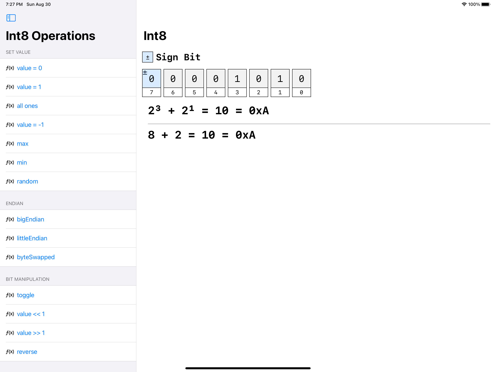
Setting value operations¶
Back in Model/NumericOperation.swift, add the following to the static menu property:
Section(title: "Set Value", items:
[
Item(name: "value = 0") { _ in 0 },
Item(name: "value = 1") { _ in 1 },
Item(name: "all ones") { _ in ~IntType.zero },
Item(name: "value = -1") { _ in -1 },
Item(name: "max") { _ in IntType.max },
Item(name: "min") { _ in IntType.min },
Item(name: "random") { _ in
IntType.random(in: IntType.min...IntType.max)
}
]), // To be continued
You can build and run the app again. These are all generic methods on IntType, which is constrained to FixedWidthInteger. So you can select any integer type and run the operation on it to see how the bits change.
The first section’s operations rely on the ExpressibleByIntegerLiteral to init to 0, 1, and -1. Because it defines a non-failable initializer, if the value falls outside the representable range, it becomes 0. Try this by setting an unsigned type to -1 by tapping the operation.
To set to all ones, use .zero from AdditiveArithmetic and the bitwise ~ complement operator from BinaryInteger to flip all the bits.
max, min and random are supported by FixedWidthInteger.
Endian operations¶
The term endian refers to two competing ideologies in “Gulliver’s Travels” by Jonathan Swift that clash over whether you should crack the little end or big end of an egg.
In computer number representation, the endian describes whether the smallest or largest byte appears first or last. With little-endian, the smallest (least significant) byte comes first.
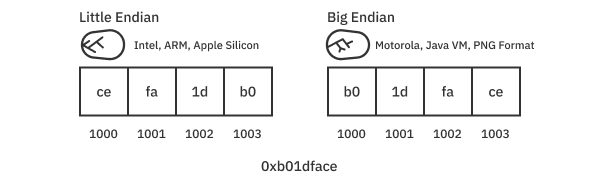
Add this to the menu property:
Section(title: "Endian", items:
[
Item(name: "bigEndian") { value in value.bigEndian },
Item(name: "littleEndian") { value in value.littleEndian },
Item(name: "byteSwapped") { value in value.byteSwapped }
]),
Build and run. Because ARM and Intel hardware are little-endian, tapping on the littleEndian menu option will do nothing. Tapping on bigEndian will swap the bytes. The opposite would be true if you were running on a big-endian machine. The byteSwapped accessor always swaps the bytes no matter what platform you’re on.
Try out some multi-byte types and make sure they work as you expect.
Even in a hardware ecosystem like Apple’s, where everything is little-endian, if you try to decode a file format such as PNG, you’ll find yourself needing to deal with both endians. Swift integer types make it easy.
Bit manipulation operations¶
Still inside IntegerOperation’s menu, add some bit manipulation operations:
Section(title: "Bit Manipulation", items:
[
Item(name: "toggle") { value in ~value },
Item(name: "value << 1") { value in value << 1 },
Item(name: "value >> 1") { value in value >> 1 },
Item(name: "reverse") { print("do later"); return $0 }
]),
Build and run.
Thanks to the BinaryInteger protocol, Swift integer types have all the basic operations for flipping and masking bits. You already saw the complement operator ~ in the Set Value section. Here, it’s used to toggle bits.
The operators >> and << can shift bits left and right, respectively. A critical concept here is sign extension. The operator >> works differently for unsigned and signed types. If the type is unsigned, >> will always insert a zero into the most-significant-bit. But if it’s signed, it will copy the sign bit. Try this with some numbers for yourself.
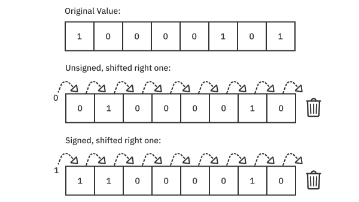
The reverse operation currently just prints "do later". You’ll implement it in a moment to reverse the order of all the bits.
Arithmetic operations¶
Add these arithmetic operations:
Section(title: "Arithmetic", items:
[
Item(name: "value + 1") { value in value &+ 1 },
Item(name: "value - 1") { value in value &- 1 },
Item(name: "value * 10") { value in value &* 10 },
Item(name: "value / 10") { value in value / 10 },
Item(name: "negate") { value in ~value &+ 1 }
])
While AdditiveArithmetic and Numeric protocols give you basic addition, subtraction and multiplication, FixedWidthInteger introduces the notion of operations that wrap. These look like the familiar operators +, - and * but have an ampersand & prefix. For example, while UInt8.max + 1 will halt your program, UInt8.max &+ 1 will wrap it around back to zero. You’ll want to use &+ so your program doesn’t crash but just wraps around if the user increments beyond the maximum value.
Note: You might think &+ are “fast” operations. They are, but they might also cause an overall slowdown in your program. The reason is that, especially if the operation computes array indices, the compiler can no longer reason about memory safety. As a result, additional checks might end up in your inner loop, causing a substantial performance hit.
SignedInteger gives you access to a negate method and unary - operator. However, because IntType is constrained only to the FixedWidthInteger protocol, you need to do it manually. You do it for two’s complement by flipping the bits and adding one as you saw previously. Try your custom operation in BitViewer and see it work like magic!
Implementing a custom reverse operation¶
To flex your bit-hacking muscles, make an extension on FixedWidthInteger that reverses all the bits.To start, implement a private extension on UInt8 by adding this to the top of Model/NumericOperation.swift:
private extension UInt8 {
mutating func reverseBits() {
self = (0b11110000 & self) >> 4 | (0b00001111 & self) << 4
self = (0b11001100 & self) >> 2 | (0b00110011 & self) << 2
self = (0b10101010 & self) >> 1 | (0b01010101 & self) << 1
}
}
Note: Bit manipulations such as reverse can come in handy when you’re doing signal processing or working with low-level hardware such as device drivers. The bit-reverse operation is famously used by the Fast Fourier Transform (FFT) algorithm, which has a wide range of applications.
This code uses the so-called divide and conquer approach, which breaks a big problem into sub-problems until the sub-problems become trivial:
- It uses a bitmask and shifting by four to swap nibbles of the byte.
- It swaps the upper half and lower half of the nibble.
- It swaps every other bit.
If you picture each bit as ABCDEFGH, here is how the first line to reverse nibbles works:
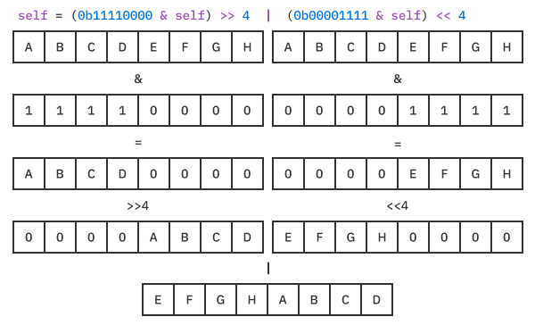
Reversing the upper and lower half of the nibbles and every other bit operates the same way.
Now, inside the same file, add the following to make it work for all integer sizes:
extension FixedWidthInteger {
var bitReversed: Self {
var reversed = byteSwapped
withUnsafeMutableBytes(of: &reversed) { buffer in
buffer.indices.forEach { buffer[$0].reverseBits() }
}
return reversed
}
}
You use the endian operation byteSwapped to flip around all the bytes and then grab a raw buffer to them. Then, you can call your reverseBits() private method to mutate each of the individual bytes.
To hook it into the interface, change the definition of the reverse item in menu so it becomes:
Item(name: "reverse") { value in value.bitReversed }
Improving bitReversed¶
The above code requires eight iterations to reverse the native 64-bit type. Can you do better and use the full width of the processor? Yes, you can.
First, comment out (or rename) the current definition of bitReversed to make room for a new one. Then type:
extension FixedWidthInteger {
var bitReversed: Self {
precondition(MemoryLayout<Self>.size <=
MemoryLayout<UInt64>.size)
var reversed = UInt64(truncatingIfNeeded: self.byteSwapped)
reversed = (reversed & 0xf0f0f0f0f0f0f0f0) >> 4 |
(reversed & 0x0f0f0f0f0f0f0f0f) << 4
reversed = (reversed & 0xcccccccccccccccc) >> 2 |
(reversed & 0x3333333333333333) << 2
reversed = (reversed & 0xaaaaaaaaaaaaaaaa) >> 1 |
(reversed & 0x5555555555555555) << 1
return Self(truncatingIfNeeded: reversed)
}
}
It’s critical to use an unsigned type to prevent sign extension when you shift the bits. A cryptic looking number such as 0xf0.... is just 0b11110000... from your first version spelled out eight times in a compact format. The same is true for all the other cryptic looking values.
Finally, the special initializer FixedWidthInteger.init(truncatingIfNeeded:) extends small integer widths out to 64 bits. At the end, it chops them off again. The standard integer initializer traps if it can’t convert the number. For example, UInt64(Int(-1)) would halt your program since -1 is unrepresentable. truncatingIfNeeded just chops the bits off without an error.
Note: This version only supports a max of 64 bits and halts at runtime otherwise. You might support larger (not yet standard) formats by looping on words.reversed() and using the native size UInt instead of an explicit UInt64.
With this code in place, test it in BitViewer and see that it works as you would expect on all the sizes.
Floating-point¶
Floating-point numbers can represent fractional values. The standard floating-point types include a 64-bit Double, a 32-bit Float and a relatively new 16-bit Float16. There’s an Intel-only Float80 type dating back to when PCs had separate math co-processor chips. Because ARM doesn’t support it, you’ll only encounter this type on an Intel-based platform, such as an Intel Mac or the iPad simulator running on an Intel Mac.
The floating-point protocols¶
Just as integers have a hierarchy of protocols to unify their functionality, floating-point numbers conform to protocols that look like this:
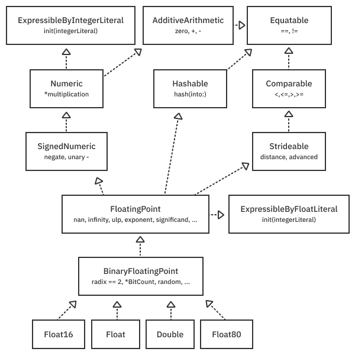
Some of these protocols, such as SignedNumeric, are the same ones used for integers. The heavy lifting begins in FloatingPoint, which supports most of the hardware-native, IEEE-754 floating-point standard. More functionality is added by BinaryFloatingPoint, which handles the specific case when the radix is two.
Understanding IEEE-754¶
A 64-bit two’s complement integer can range from a colossal -9,223,372,036,854,775,808 (Int64.min) to 9,223,372,036,854,775,807 (Int64.max). But a 64-bit Double can range by an unfathomable ±1.8e+308 (as reported by Double.greatestFiniteMagnitude via the FloatingPoint protocol) . Moreover, this same Double can represent numbers as small as 4.9e-324 (as reported by Double.leastNonzeroMagnitude). How is this even possible?
The answer is a thoughtful representation defined by the IEEE-754 standard that leverages the idea of variable precision. It keeps numbers close to zero extremely fine-grained while making huge numbers chunkier.
To explore this, open BitViewer again and select a floating-point type. Working with Float16 is the most comfortable because the limits and sizes are relatively small. With Float16, the largest representable finite magnitude is 65504.0 and the smallest non-zero magnitude is 6e-08.
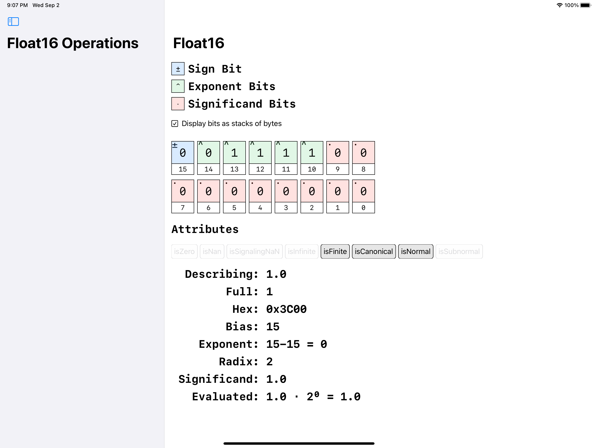
There are three kinds of bits: one sign bit, five exponent bits and 10 significand bits for a total of 16. The equation determines the value of finite numbers:
(-1 ^ sign) * significand * (radix ^ exponent)
Here are some important points:
^stands for exponentiation.- For any
BinaryFloatingPoint, the radix is two. A radix of two is a very efficient machine representation but can’t exactly represent some common numbers such as 0.1. -
The sign flips the number positive or negative. Any number raised to the 0th power is defined to be one (positive). When raised to the first power, the term becomes minus one (negative). Unlike in two’s complement, floating-point zero has two representations: -0 and +0.
-
The
significandis derived from the raw significand bits in a particular way described below. TheFloatingPointprotocol gives you the cooked version of the bits you can use in the above formula. - The
exponentis also derived from the bits, and its cooked value can be obtained from theFloatingPointprotocol.
The tricky magic lies in how the significand and exponent are computed.
The significand bits determine the actual significand value. To get maximum range in the fewest number of bits, IEEE-754 assumes a phantom, leading ones bit, even though it is not stored in memory. This is known as the leading bit convention. It’s why the significand bits are set to all zeros to represent the number one. If you turn on bit 9 in the above example, it will add 0.5 (2^-1) and change the overall value to 1.5. Turning on bit 8 will add 0.25 (2^-2) to make 1.75 and so on. Try it out and see.
The exponent computation is equally subtle and clever to produce a maximum range with the fewest bits. The exponent is computed by taking a bias value and subtracting the magnitude of the exponent bits. The bias determined by the IEEE-754 standard is:
bias = 2 ^ (exponentBitCount -1) - 1
In the case of Float16, it evaluates as pow(2, Float16.exponentBitCount-1) - 1, which is 15. To represent the value 1.0 in the example above, the exponent bits are set to 0b01111 or 15 so that bias - 15 = 0. Because of this, radix ^ 0 = 1.
While experimenting with changing bits, you might have noticed that certain bit patterns are special case values and the computation rules above are ignored. For example, if you turn all the exponent bits on, the number becomes a special NaN, which stands for “not a number”.
Adding floating-point operations to BitViewer¶
To further explore floating-point numbers, add some operations to BitViewer. Again, open the source file Model/NumericOperation.swift and add this to the bottom:
enum FloatingPointOperation<FloatType: BinaryFloatingPoint> {
typealias Operation = (FloatType) -> FloatType
struct Section {
let title: String
let items: [Item]
}
struct Item {
let name: String
let operation: Operation
}
static var menu: [Section] {
[
// Add sections below
]
}
}
This code should look pretty familiar: It’s just the floating-point version of what you did with integers. The generic placeholder FloatType is constrained to BinaryFloatingPoint, which gives you access to a lot of functionality across concrete floating-point types.
To enable the operations in the UI so you can experiment with them, head over to Views/NumericOperationsView.swift and uncomment the block of code that begins with:
// TODO: - Uncomment after implementing FloatingPointOperation.
// : etc
This code displays each operation in a list and calls it when you tap it.
Setting value operations¶
Back in Model/NumericOperation.swift, add this section to the floating-point menu property.
Section(title: "Set Value", items:
[
Item(name: "value = 0") { _ in 0 },
Item(name: "value = 0.1") { _ in FloatType(0.1) },
Item(name: "value = 0.2") { _ in FloatType(0.2) },
Item(name: "value = 0.5") { _ in FloatType(0.5) },
Item(name: "value = 1") { _ in 1 },
Item(name: "value = -1") { _ in -1 },
Item(name: "value = pi") { _ in FloatType.pi },
Item(name: "value = 100") { _ in 100 }
]),
Build and run. Select the Float16 type. This section of operations primarily uses the protocols ExpressibleByIntegerLiteral and ExpressibleByFloatLiteral to set the value.
Notice the Attributes that describe the value using a set of binary computed properties. 1.0 has isFinite, isCanonical and isNormal set to true. isFinite means that it uses the formula you saw previously to compute the value. isCanonical implies that the value is in its canonical form.
The same value represented in different ways is known as a cohort. Using the expressible protocol will ensure you get the canonical representation.
Try some of the other values. In particular, look at 0.1. With only 16 bits and a radix of two, it is impossible to represent it exactly. Even with a 64-bit Double, you can’t get it exactly. It would require an infinite number of significand bits to do.
Note: If you’re writing apps that deal with currency, you’ll probably want to use a numeric type that can represent 0.1 exactly and avoid accounting errors. Although IEEE-754 specifies a radix 10 type that can handle this, it’s not yet natively implemented for Swift. However, Swift provides Decimal, an overlay (wrapper type) on Objective-C’s NSDecimalNumber.
Subnormals¶
Values can either be normal or subnormal or neither in the case of zero. A normal number uses the leading bit convention you saw with 1.0. A subnormal (also denormal) assumes the zero leading bit and supports really small numbers. Subnormal numbers are created by keeping all exponent bits zero and setting one of the significand bits. Try it and see!
Note: Subnormal numbers were a controversial part of the IEEE-754 spec. Although implemented on Intel and newer ARM devices, they aren’t implemented on all versions of ARM (ARMv7 and earlier). As a result, you’ll find operations on these numbers taking 50-100X the time because everything is implemented in software instead of hardware. These platforms support a flush-to-zero control register, which just makes these small values zero.
Set special values operations¶
Add another section to the floating-point menu property:
Section(title: "Set Special Values", items:
[
Item(name: "infinity") { _ in
FloatType.infinity
},
Item(name: "NaN") { _ in
FloatType.nan
},
Item(name: "Signaling NaN") { _ in
FloatType.signalingNaN
},
Item(name: "greatestFiniteMagnitude") { _ in
FloatType.greatestFiniteMagnitude
},
Item(name: "leastNormalMagnitude") { _ in
FloatType.leastNormalMagnitude
},
Item(name: "leastNonzeroMagnitude") { _ in
FloatType.leastNonzeroMagnitude
},
Item(name: "ulpOfOne") { _ in
FloatType.ulpOfOne
}
]),
Build and run, and select Float16.
As you’ve already seen, floating-point numbers can represent special values that integers can’t. This section of operations sets them so you can look at the bit patterns produced.
Setting all the exponent bits to one represents infinity, and you can make -infinity by setting the sign bit. You can compare this to greatestFiniteMagnitude and leastNormalMagnitude. For the absolute smallest representable number, you can use the subnormal leastNonzeroMagnitude.
Not-a-number comes in two flavors. A signaling NaN may cause a hardware trap if you operate on it. This behavior is good for stopping as soon as an issue occurs instead of millions or billions of instructions later. Unfortunately, not all hardware (including ARM) supports it, so you can’t depend on it. Many hardware platforms will immediately convert a signaling NaN into a quiet one.
You can make a quiet NaN by setting all the exponent bits and the most significant significand bit to one.
By setting other significand bits, you can send an error code along with your NaN. This extra information could, in theory, be used to identify the operation that caused the value to become a nan. But this is not done in practice.
Aside: Having such a vast number of error codes representing different NaN codes is considered a significant weakness of IEEE-754. Emerging standards in scientific computing avoid this, but hardware adoption is, as of this writing, not available. Check out Type III Unum - Posit for recent developments in floating-point representations https://en.wikipedia.org/wiki/Unum_(number_format). Might you see support for this in a future version of Apple Silicon? Although it’s not in the M1, Swift numerics seem to be mapping a path for this type of evolution.
Stepping and functions operations¶
The final two sections explore the ulp or unit of least precision of floating-point numbers. Add them to the menu.
Section(title: "Stepping", items:
[
Item(name: ".nextUp") { $0.nextUp },
Item(name: ".nextDown") { $0.nextDown },
Item(name: ".ulp") { $0.ulp },
Item(name: "add 0.1") { $0 + 0.1 },
Item(name: "subtract 0.1") { $0 - 0.1 }
]),
Section(title: "Functions", items:
[
Item(name: ".squareRoot()") { $0.squareRoot() },
Item(name: "1/value") { 1/$0 }
])
Build and run the app. Select Float16.
Many are surprised that the precision of a floating-point number changes depending on its value. The bigger the value is, the less precise it is. Consider the following condition:
if value == value + 1 {
fatalError("Can this happen?")
}
The fatalError will happen if the value is large enough. If value is 1e19, for example, adding one doesn’t do anything.
On Float16, if you select greatestFiniteMagnitude and then ulp, it will report a value of 32. If you start with greatestFiniteMagnitude (65504) and then press nextDown, you get 65472, which is 32 away. It gets more extreme with the larger size floating-point value.
The other stepping methods let you experiment with precision. For example, start with zero on a Float16 and add 0.1 a dozen times. You’ll see you’re already off by 0.01, which might cause an accountant to go crazy and stay awake at night. Although BinaryFloatingPoint types are great for overall range and precision, they’re ill-suited to things like currency, for which you should use a Decimal type. Decimal can represent 0.1 exactly.
Full generic programming with floating-point¶
With the BitViewer app, you saw how you could use BinaryFloatingPoint to operate on floating-point types generically. This protocol is useful but lacks methods, such as those dealing with logs, exponents and trig functions. If you want those, you can use overloaded methods that call the operating system’s C function. However, calling these functions can’t be done generically.
Swift Evolution 0246: Generic Math(s) Functions (https://github.com/apple/swift-evolution/blob/master/proposals/0246-mathable.md), formally accepted by the Swift Core Team in March 2019, fixes this. Unfortunately, because of “source breaking consequences relating to type-checker performance and shadowing rules,” it has not yet made it into the language proper. However, you can use it by importing the Numerics package. Apple thought it was important enough to cover in depth at a WWDC20 session.
Understanding the improved numeric protocols¶
The Swift Numerics package, which will eventually become part of Swift proper, adds important protocols to the standard library, including: AlgebraicField, ElementaryFunctions, RealFunctions and Real. They fit together with the currently shipping protocols like this:
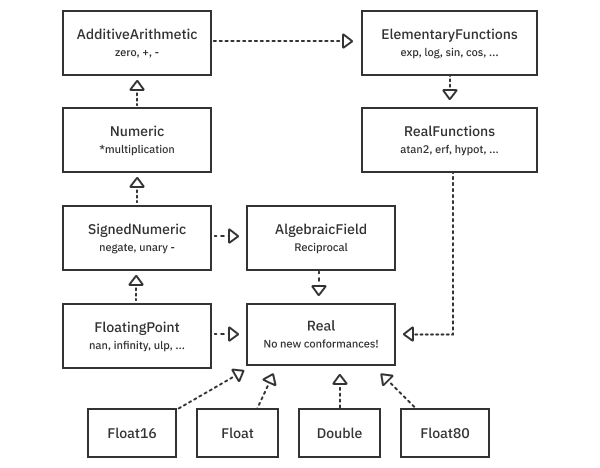
Notice that this improved hierarchy de-emphasizes the importance of radix-two-only BinaryFloatingPoint. Instead, it creates a new empty protocol called Real that combines all the interesting protocols so you can write generic numeric algorithms like this:
func compute<RealType: Real>(input: RealType) -> RealType {
// ...
}
RealType is a generic placeholder that can access all the transcendental functions and algebraic operations it needs by conforming to Real. That makes it trivial to switch between any floating-point types with relative ease.
The Swift Numerics package also introduces a Complex number type that consists of two floating-point types conforming to Real. It is layout compatible with the complex types found in C and C++, making it possible to play with popular signal processing libraries.
You’ll now get some hands-on experience using the numerics package, the Real protocol and the Complex number type by implementing the famous Mandelbrot set. (Don’t worry if you’ve never heard of the Mandelbrot set. You’ll be in for a treat.)
Getting started with Mandelbrot¶
Open the Mandelbrot starter project and build and run the app. You’ll see that the Swift Numerics package is loaded and built as a dependency.
Xcode lets you easily browse the source of Swift packages in your project. Take a moment to explore the Numerics package, paying particular attention to files under swift-numerics/Sources/RealModule. There, you’ll see implementations for all the protocols diagrammed above.
The starter app is another SwiftUI app and looks like this in landscape orientation on an iPad:
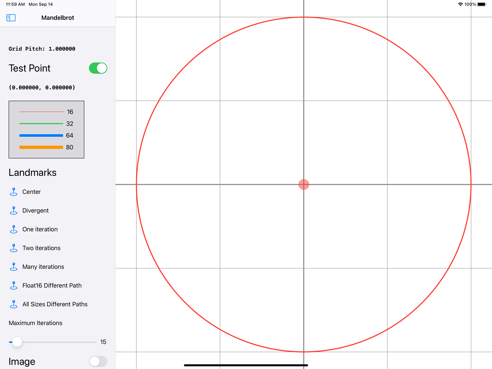
You can drag around the center dot, but it currently doesn’t do anything.
Again, you won’t focus on the specifics of SwiftUI, but you will see how to write floating-point code generically.
For this application, you’ll compute millions of values continuously. The starter project sets the debug scheme to release mode to maximize performance. This setting will make specific loops execute faster by an order of magnitude. If you want to enable more reliable debugging, change back to a debug build using the Xcode scheme editor.
What is the Mandelbrot set?¶
In mathematics, a set is a collection of mathematical objects. The Mandelbrot set is a collection of complex numbers. Sound complex? It isn’t. Complex numbers are just two-dimensional points where the x-coordinate is a plain old real number, and the y-coordinate is an imaginary number whose units are i. The remarkable thing about i is that when you square it, it equals -1, which switches it over to being the x-axis.
Note: A Complex number is a Swift struct that consists of two values. These real and imaginary components are floating-point values of the same type. Like plain-old numbers, complex numbers support common operations such as sums, differences, products, etc. https://www.khanacademy.org is a great resource for learning about complex numbers if you’re interested in the nitty-gritty details beyond what is discussed here.
To find out if a number is contained in the Mandelbrot set, square it repeatedly, and it either blows up (diverges) or does not. Values that don’t diverge are in the Mandelbrot set.
Most numbers diverge. For example, take the number 5 and start squaring it. 5, 25, 125, 625, 3125, 15625, … It blows up, so is not in the Mandelbrot set. Take the number 0.1. It equals 0.1, 0.01, 0.001, 0.0001, 0.00001. This number never diverges and is in the set. You simply expand this idea to complex numbers that have two components. Mathematicians have proved that if a complex number gets further away than a radius of two from the origin, it will always diverge. You can use this fact to great effect to determine if a number is in the set or not.
Note: Because sets are binary (either in the set or not in the set), you might wonder why Mandelbrot set drawings appear in psychedelic colors instead of just black and white. The colors come from how fast a given point diverges.
Converting to and from CGPoint¶
SwiftUI and UIKit depend on Core Graphics for rendering. The red dot that you can drag around in the interface represents a CGPoint with an x and y value consisting of CGFloats.
You’ll want to convert CGPoint to a Complex type with real and imaginary parts and back again. The starter project defines a CGFloatConvertable protocol and implements it for all floating-point types to make this easy. You can find the implementation for this in CGFloatConvertable.swift.
Note: Float80 is only available on Intel platforms, so it must be conditionalized with #if arch(x86_64). You’ll see it only if you run on the iPad simulator on an Intel-based Mac.
Add a test point path¶
Let the generic programming using Real begin! Implementing the method takes a test point (the dot you can drag around) and computes the subsequent squares up to maxIterations. To do this, open the file MandelbrotMath.swift and find points(start:maxIterations:).
Then, replace this function with the following:
static func points<RealType: Real>(start: Complex<RealType>,
maxIterations: Int)
-> [Complex<RealType>] {
// 1
var results: [Complex<RealType>] = []
results.reserveCapacity(maxIterations)
// 2
var z = Complex<RealType>.zero
for _ in 0..<maxIterations {
z = z * z + start
defer {
results.append(z) // 3
}
// 4
if z.lengthSquared > 4 {
break
}
}
return results
}
This function is generic across any Real conforming type. It returns a list of points that can be plotted by Core Graphics. These points are squares — the start point for a maximum of maxIterations times. Here are some key observations:
- You don’t know how many points will return, but you know it won’t be more than
maxIterations. Pre-allocating the results array will avoid repeated, intermediate allocations. - The loop uses the fact that the
Complextype is anAlgebraicField, which can be squared and added. It handles therealandimaginaryparts for you. - Using the
deferblock, you can guarantee that a point gets appended on every iteration of the loop, even if there is an early exit viabreak. - A point has diverged from the Mandelbrot set if it goes outside radius-two. To avoid calculating the expensive square root, you can use
lengthSquaredand2^2(four) as the limit.
Build and run the app. You can now explore specific points in the Mandelbrot set by dragging the dot around. The MandelbrotView calls your function with all floating-point types and renders them with different line thicknesses. In most cases, they line up perfectly, but sometimes they don’t.
Explore the landmarks¶
The interface provides a set of named landmarks to try. Tap the landmark name, and the starting dot moves to a preset position.
- Divergent: This is outside the radius-two circle, so it stops immediately.
- One iteration: This squares the number once and ends up outside the circle for a total of one iteration.
- Two iterations: This squares the number, lands inside the circle, then squares it again and winds up outside the circle for a total of two iterations.
-
Many iterations: This squares the number repeatedly up to Maximum Iterations and stays inside the circle, so it’s in the Mandelbrot set.
-
Float16 Different Path: A complicated path that is different for
Float16. At about 25 iterations (which you can control with the slider), all the different types diverge. - All Sizes Different Paths: This point appears to converge. But at about 100 iterations, all the different floating-point types take off in different directions.
Float16stays converged while the other 32-, 64-, and 80-bit floats diverge and go their separate ways.
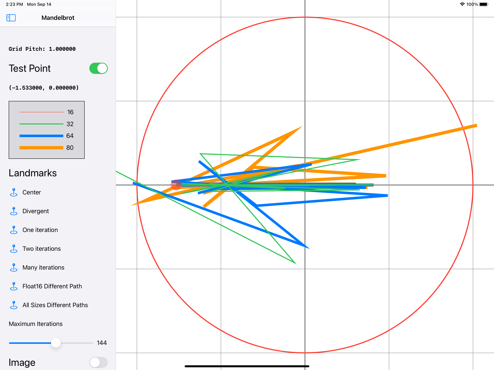
You might wonder what would happen if you tested every single point in the complex plane and used a different color depending on the number of iterations it took to diverge outside the radius-two circle. Would it look super cool? Yes, it would. You’ll implement that now.
Implement Mandelbrot image generation¶
Time to turn your floating-point generic programming to 11. You’ll want to do just what you did above. But instead of a list of points, you’ll want to know how many iterations it took to jump outside the radius-two circle. You could use the same method and call .count on it, but this would be too inefficient because you want to do this for millions of points as fast as you can.
In the MandelbrotMath namespace, add the following static function:
@inlinable static
func iterations<RealType: Real>(start: Complex<RealType>,
max: Int) -> Int {
var z = Complex<RealType>.zero
var iteration = 0
while z.lengthSquared <= 4 && iteration < max {
z = z * z + start
iteration += 1
}
return iteration
}
The @inlinable attribute means that you suggest that the compiler inject the body of this function at the call site, so you don’t pay the cost of a function call.
This function computes the number of iterations required for a given start point very efficiently without requiring any heap allocations as the previous point function did for the array.
Next, find this method in MandelbrotMath.swift:
static func makeImage<RealType: Real & CGFloatConvertable>(
for realType: RealType.Type,
imageSize: CGSize,
displayToModel: CGAffineTransform,
maxIterations: Int,
palette: PixelPalette
) -> CGImage? {
// TODO: implement (2)
nil
}
This method takes a specific RealType (e.g. Float, Double, Float16) and computes an entire image with dimension imageSize, where each pixel is a test point.
displayToModel is an affine transform that specifies how to go from the display coordinates (where the origin is the upper-left corner) to mathematical coordinates where the origin starts at the center of the view and follows the right-hand-rule with the y-axis going upward.
The palette is a lookup table that goes from the number of iterations for a particular point and maps to a 32-bit, red-green-blue-alpha pixel.
The starter project contains a pixel and bitmap abstraction to make image generation easy. This abstraction can be found in Bitmap.swift and is generic across pixel types.
Start by replacing the above function with:
static func makeImage<RealType: Real & CGFloatConvertable>(
for realType: RealType.Type,
imageSize: CGSize,
displayToModel: CGAffineTransform,
maxIterations: Int,
palette: PixelPalette
) -> CGImage? {
let width = Int(imageSize.width)
let height = Int(imageSize.height)
let scale = displayToModel.a
let upperLeft = CGPoint.zero.applying(displayToModel)
// Continued below
return nil
}
This function truncates the width and height of the image and stores them as an integer in width and height.
It then takes the displayToModel transform, which can transform the display into math model points and grabs the scale stored in the “a” variable of the matrix. This operation is valid because there isn’t rotation or skew and the x-scale and y-scale are equivalent.
upperLeft takes the display point (0,0) and pushes it through the transform to find a position in the complex plane.
Next, replace the return nil statement with the following:
let bitmap = Bitmap<ColorPixel>(width: width, height: height) {
width, height, buffer in
for y in 0 ..< height {
for x in 0 ..< width {
let position = Complex(
RealType(upperLeft.x + CGFloat(x) * scale),
RealType(upperLeft.y - CGFloat(y) * scale))
let iterations =
MandelbrotMath.iterations(start: position,
max: maxIterations)
buffer[x + y * width] =
palette.values[iterations % palette.values.count]
}
}
}
return bitmap.cgImage
This code uses the Bitmap abstraction to create a CGImage with the specified width and height. A CGPoint initializes the Complex type to use as a starting point. Then, it calls the inlined iterations function defined above to determine the number of iterations for a particular test point. Finally, it pokes a color value looked up from the palette into the pixel location. The cgImage accessor initializes an image from these pixels.
With this code in place, rerun the app to explore the Mandelbrot set in detail. Tap the image switch to show the image. You can pan and zoom the image to reveal this fractal world’s infinite complexity.
Infinite patterns and complexity. All from squaring a number.
Precision and performance¶
The Float Size control lets you pick which generic version gets called. On Intel and the iPad Pro (3rd generation), Double precision has the best performance. Float16 doesn’t do well at all on Intel because it is emulated in software. Surprisingly, it doesn’t do that great on an actual device, either — all the conversions between CGFloat and Float16 result in lower performance.
Float16 renders well at low zoom factors, but you can see that it breaks down quickly as you zoom in. You start seeing blocky artifacts like this:
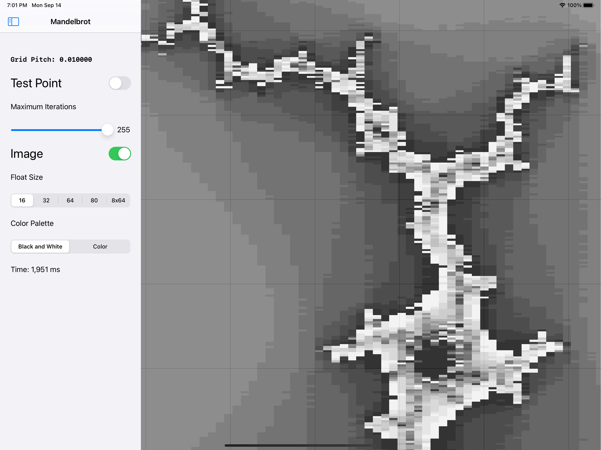
Float80 is also surprisingly slow on modern Intel machines. This lower performance results from emulating the computations in microcode on the CPU and because it takes time to marshal between the Core Graphics CGFloat size.
If you experiment with the other types, you’ll see that same blockiness eventually with all the floating-point types the closer you zoom. The more precision the type has, the deeper you can go without quantization errors.
Improving performance with SIMD¶
Can you make the rendering loop run faster and remain in pure Swift? Yes, you can.
All modern CPUs support single-instruction-multiple-data (SIMD) computation. For example, instead of doing 16 additions one by one, the processor can group one set of 16 numbers with another set of 16 numbers and perform all 16 additions at once, in parallel. One clock tick. This performance requires some tricky shuffling of the data, and, in some cases, the compiler automatically does it for you. This optimization is known as auto-vectorization and is an active area of compiler research.
To help the compiler, Swift provides SIMD types for integers and floating-point numbers. If you group numbers using a SIMD type, the compiler can perform auto-vectorization much more reliably.
Swift supports SIMD2, SIMD4, SIMD8, SIMD16, SIMD32, SIMD64 types. Each of these contains Scalar types that are an integer or floating-point number. SIMD8 is said to contain eight scalar lanes.
Now, use SIMD8 to speed up the Mandelbrot image calculation by performing eight test point calculations in parallel.
Once again, open the file MandelbrotMath.swift and find the function:
static func makeImageSIMD8_Float64(
imageSize: CGSize,
displayToModel: CGAffineTransform,
maxIterations: Int,
palette: PixelPalette
) -> CGImage? {
// TODO: implement (3)
nil
}
Replace it with:
static func makeImageSIMD8_Float64(
imageSize: CGSize,
displayToModel: CGAffineTransform,
maxIterations: Int,
palette: PixelPalette
) -> CGImage? {
typealias SIMDX = SIMD8
typealias ScalarFloat = Float64
typealias ScalarInt = Int64
// Continued below
}
This code defines some type aliases you can use to play around with different sizes. ScalarFloat and ScalarInt must have the same width in bits because that is what modern hardware requires. If you accidentally make them different sizes, the program won’t type check.
Next, add this code to the method:
let width = Int(imageSize.width)
let height = Int(imageSize.height)
let scale = ScalarFloat(displayToModel.a)
let upperLeft = CGPoint.zero.applying(displayToModel)
let left = ScalarFloat(upperLeft.x)
let upper = ScalarFloat(upperLeft.y)
// Continued below
This code looks similar to the previous non-SIMD version. But because you can’t use Complex in a SIMD type, you need to perform the operations explicitly in the loop.
Next, add some useful constants to the method:
let fours = SIMDX(repeating: ScalarFloat(4))
let twos = SIMDX(repeating: ScalarFloat(2))
let ones = SIMDX<ScalarInt>.one
let zeros = SIMDX<ScalarInt>.zero
// Continued below
These constants appear in the inner loop. Each is eight lanes wide (as determined by SIMDX, which aliases to SIMD8).
Now, use the bitmap initializer:
let bitmap = Bitmap<ColorPixel>(width: width, height: height) {
width, height, buffer in
// 1
let scalarCount = SIMDX<Int64>.scalarCount
// 2
var realZ: SIMDX<ScalarFloat>
var imaginaryZ: SIMDX<ScalarFloat>
var counts: SIMDX<ScalarInt>
// 3
let initialMask = fours .> fours // all false
var stopIncrementMask = initialMask
// 4
let ramp = SIMDX((0..<scalarCount).map {
left + ScalarFloat($0) * scale })
// 5
for y in 0 ..< height {
// Continue adding code here
}
}
return bitmap.cgImage
This code creates the bitmap and returns it as an image. Here are the details:
scalarCountis set to eight because SIMDX aliases SIMD8.realZandimaginaryZare eight lanes of floating-point numbers to keep track of how these eight test points evolve.countsare eight lanes of the number of iterations for each test point.- The
initialMaskandstopIncrementMaskcontrol thecountsthat increment in the inner loop. If none of the counts increment, the loop will exit early. Here, you see the operator.>. This operation performs a>operation for each of the lanes independently. rampis used to determine the real value starting point of the complex number efficiently below.yloops row-by-row, creating the image.
Now, add this into to the y row loop:
let imaginary = SIMDX(repeating: upper - ScalarFloat(y) * scale)
for x in 0 ..< width / scalarCount {
let real = SIMDX(repeating: ScalarFloat(x * scalarCount) * scale) + ramp
realZ = .zero
imaginaryZ = .zero
counts = .zero
stopIncrementMask = initialMask
// Continue adding code here
}
// Process remainder
This code computes the starting imaginary component used for the whole row of pixels. Then, you process each of the width pixels in chunks of eight. The answers accumulate in realZ and imaginaryZ, while the iterations accumulate in counts.
Next, continue adding this code:
// 1
for _ in 0..<maxIterations {
// 2
let realZ2 = realZ * realZ
let imaginaryZ2 = imaginaryZ * imaginaryZ
let realImaginaryTimesTwo = twos * realZ * imaginaryZ
realZ = realZ2 - imaginaryZ2 + real
imaginaryZ = realImaginaryTimesTwo + imaginary
// 3
let newMask = (realZ2 + imaginaryZ2) .>= fours
// 4
stopIncrementMask .|= newMask
// 5
let incrementer = ones.replacing(with: zeros,
where: stopIncrementMask)
if incrementer == SIMDX<ScalarInt>.zero {
break
}
// 6
counts &+= incrementer
}
// 7
let paletteSize = palette.values.count
for index in 0 ..< scalarCount {
buffer[x * scalarCount + index + y * width] =
palette.values[Int(counts[index]) % paletteSize]
}
This code does the following:
- For the eight values, you compute up to the maximum number of iterations.
- This is the algebra used to compute the square of a complex number spelled out. Recall
(a+b)(a+b) = a^2+2ab+b^2. Because b is imaginary, squaring it makes it a real number. TheComplextype handled this for you before, and now you’re doing it manually. - You check if any of the test points sits outside the radius-two circle. If it is, the mask is true for that lane.
- You accumulate this mask so that if none of the lanes are incrementing, the loop can exit early.
- You take a list of eight ones and replace them with zero if that lane has stopped incrementing. This masking is how you avoid doing an if/else computation, which kills parallel performance. If every
counthas stopped incrementing (incrementeris all zeros), you cut out early. - The incrementer, which is eight lanes of ones and zeros, accumulate into the
counts. - Finally, you need to look up the color for each of the iteration counts in the
paletteand write it into memory.
At this point, the algorithm is done. To make it work for any width (not just multiples of eight), you can add this code to process the remainder:
let remainder = width % scalarCount
let lastIndex = width / scalarCount * scalarCount
for index in (0 ..< remainder) {
let start = Complex(
left + ScalarFloat(lastIndex + index) * scale,
upper - ScalarFloat(y) * scale)
var z = Complex<ScalarFloat>.zero
var iteration = 0
while z.lengthSquared <= 4 && iteration < maxIterations {
z = z * z + start
iteration += 1
}
buffer[lastIndex + index + y * width] =
palette.values[iteration % palette.values.count]
}
The above code is the non-SIMD algorithm. If you had a display width that was not divisible by eight, this code would handle a couple of leftover pixels.
Your SIMD implementation is now complete. You can run the app and now use the 8x64 float type. For fewer iterations, you won’t see much of a speedup. However, if you boost the number of iterations to 255, you start seeing enormous performance wins. For example, with max iterations set to 255 and a high zoom factor, Float64 takes 750 ms while the SIMD8<Float64> implementation is 332 ms.
Where are the limits?¶
SIMD works well (despite being a little messy to implement) because it tells the compiler to parallelize the work. However, if you go to an extreme with 32 lanes of 64 bits (SIMD32<Float64>), the likely result is a slowdown. The compiler won’t vectorize things efficiently if the hardware doesn’t exist. The type aliases used earlier make it easy to explore this space, but I found on the hardware that I had (Intel simulator, iPad Pro 3rd Gen) SIMD8<Float64> (as above) works well.
Note: To go even faster than what the CPU can provide, you could take the rendering algorithm and port it to the GPU. This involves writing the algorithm as a shader in OpenGL or Metal.
Ranges¶
Now, turn your attention to another important aspect of Swift numeric types that you’ve been using all along — ranges. Earlier, you saw that integers and floating-point types conform to the Comparable protocol. This conformance is crucial for supporting operations on ranges of numbers.
Like numeric types themselves, it would be reasonable to guess that ranges are a concept built into the compiler. But, as with many core features in Swift, they’re just part of the ever extensible, standard library.
It turns out that a Range is a generic struct with a lower and upper of type Bound that conforms to Comparable. For example, in an empty playground (or the one provided in the starter folder), type this:
enum Number: Comparable {
case zero, one, two, three, four
}
With this simple definition, it is possible to form a range:
let longForm =
Range<Number>(uncheckedBounds: (lower: .one, upper: .three))
The ..< operator makes it feel like a built-in language feature and is equivalent:
let shortForm = Number.one ..< .three
shortForm == longForm // true
A key quality of a range is that it doesn’t include the upper bound. You can see that by running this:
shortForm.contains(.zero) // false
shortForm.contains(.one) // true
shortForm.contains(.two) // true
shortForm.contains(.three) // false
If you need to include the upper bound, there is another range type called ClosedRange. Try this:
let longFormClosed =
ClosedRange<Number>(uncheckedBounds: (lower: .one, upper: .three))
let shortFormClosed = Number.one ... .three
longFormClosed == shortFormClosed // true
shortFormClosed.contains(.zero) // false
shortFormClosed.contains(.one) // true
shortFormClosed.contains(.two) // true
shortFormClosed.contains(.three) // true
But those aren’t all the range types, of course. You can also create partial ranges using prefix and postfix operators. Add this:
let r1 = ...Number.three // PartialRangeThrough<Number>
let r2 = ..<Number.three // PartialRangeUpTo<Number>
let r3 = Number.zero... // PartialRangeFrom<Number>
As you see, there are many ways to specify a range.
Looping over a range¶
You might wonder if you can use these ranges in a for loop, such as:
for i in 1 ..< 3 {
print(i)
}
For Number, not quite. This capability is conditional on Strideable conformance. You might remember that the Swift numeric types are all Strideable. Additionally, the Strideable associated type Stride must conform to SignedInteger.
To see this, make Number adopt Strideable. First, overwrite the definition to this:
enum Number: Int, Comparable {
static func < (lhs: Number, rhs: Number) -> Bool {
lhs.rawValue < rhs.rawValue
}
case zero, one, two, three, four
}
Next, add the conformance:
extension Number: Strideable {
public func distance(to other: Number) -> Int {
other.rawValue - rawValue
}
public func advanced(by n: Int) -> Number {
Number(rawValue: (rawValue + n) % 4)!
}
public typealias Stride = Int
}
Importantly, the Stride type is set to an Int, which is a SignedInteger. Using Int makes your Number type a CountableRange which is a typealias defined by the system:
typealias CountableRange<Bound> = Range<Bound>
where Bound: Strideable, Bound.Stride: SignedInteger
So now, you can do this:
for i in Number.one ..< .three {
print(i)
}
It will print one and two to the debug console.
Striding backward and at non-unit intervals¶
Ranges always require the lower and upper bounds to be ordered. What if you want to count backward?
A common way to do this is to treat the range like a collection and use the reversed() algorithm like so:
for i in (Number.one ..< .three).reversed() {
print(i)
}
However, when you conform to Strideable, you can use the standard library stride functions even if your type is not a CountableRange. Try this:
for i in stride(from: Number.two, to: .zero, by: -1) {
print(i)
}
for i in stride(from: Number.two, through: .one, by: -1) {
print(i)
}
You can also see the usage of stride with CGFloat in the Mandelbrot App. In the file GraphingView.swift, strides of horizontal and vertical lines are created as part of the GridLines shape to give the appearance of scaling graph paper.
Range expressions¶
If you’re writing a function that takes a range as an input, you might wonder which of the five flavors to use. A good option is to use the RangeExpression protocol to conform to all range types. Diagrammed, it looks like this:
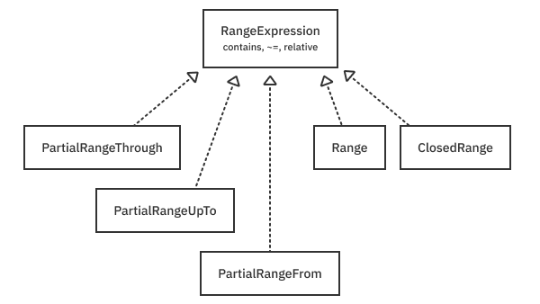
You can take advantage of this protocol by making your function abstracted across range type. For example, if you write this:
func find<R: RangeExpression>(value: R.Bound, in range: R)
-> Bool {
range.contains(value)
}
It lets you use any form of range, like so:
find(value: Number.one, in: Number.zero ... .two) // true
find(value: Number.one, in: ...Number.two) // true
find(value: Number.one, in: ..<Number.three) // true
Making the function generic keeps your API much more flexible than if the user had to remember to use a specific range operator such as ..< or .... Now, they all just work.
Key points¶
You’ve seen how Swift builds numeric types and ranges from the ground up using protocols and generics. Here are some key points to take away:
- Swift describes the integer types through a composition of protocols.
- As you move down the protocol hierarchy to
FixedWidthInteger, you get more and more functionality that you can use generically. - Integers are represented using two’s complement binary.
- To negate a number in two’s complement, you flip the bits and add one.
- Signed integers sign extend a value as it shifts right. Unsigned integers don’t.
- Swift traps your program if you overflow. But you can shut this safety feature off by using operators that begin with
&or special truncating initializers. - Endian refers to the ordering of bytes in memory. Little-endian is the most common on modern Apple platforms.
- Swift supports IEEE-754 binary floating-point types and uses protocols to describe them.
- Floating-point numbers can be finite, infinite, and nan.
BinaryFloatingPointconforming types have a radix of two.- If you’re working with currencies, consider using the
Decimaltype, which uses a radix equal to 10. - Some floating-point types and features are not supported by hardware. (Intel processors emulate
Float16.Float80is not supported on ARM.) - The Swift Numerics package hasn’t been merged into the standard library yet. However, it allows for full generic programming, using the
Realprotocol. - Swift Numerics provides a
Complexnumber type. - The SIMD types let you group data so the compiler can vectorize them. Using SIMD can significantly increase speed but also adds complexity.
- There are a wide variety of range types defined by the Swift standard library.
RangeExpressioncan be used to unify the different range types.
Where to go from here?¶
Although you’ve covered a lot of ground in this chapter, it just scratches the surface of what’s possible with numerics. You can explore some of the corners of IEEE-754 by reading the Wikipedia article at:
https://en.wikipedia.org/wiki/IEEE_754
The Swift Numerics package is one of the more exciting recent developments in Swift. It will bring many powerful features, such as approximate equality, additional number types, generalized tensors and more. For the latest information, check out the forum at:
https://forums.swift.org/c/related-projects/swift-numerics/56
Finally, you’ve also looked at generic ranges, which can be used as sequences or collections, or to slice existing collections. You’ll explore the details of these types in the next chapter.